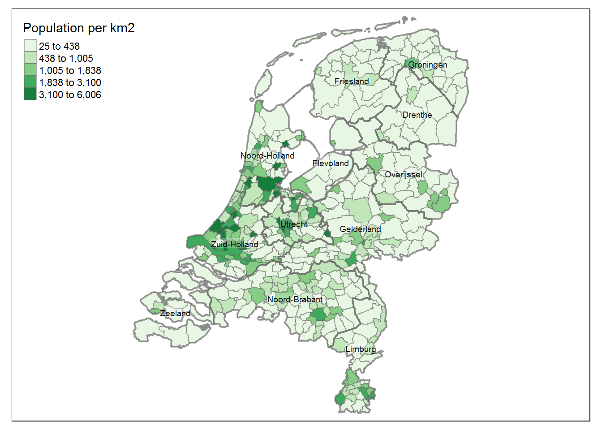
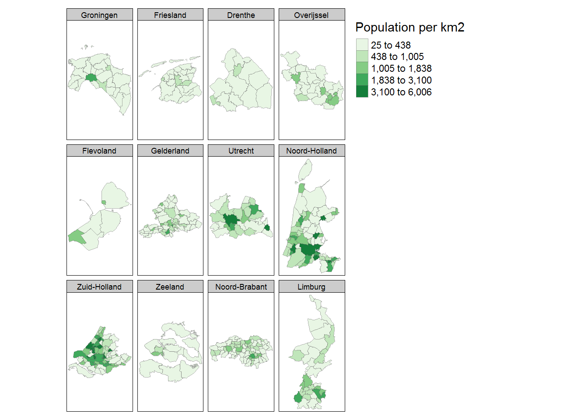
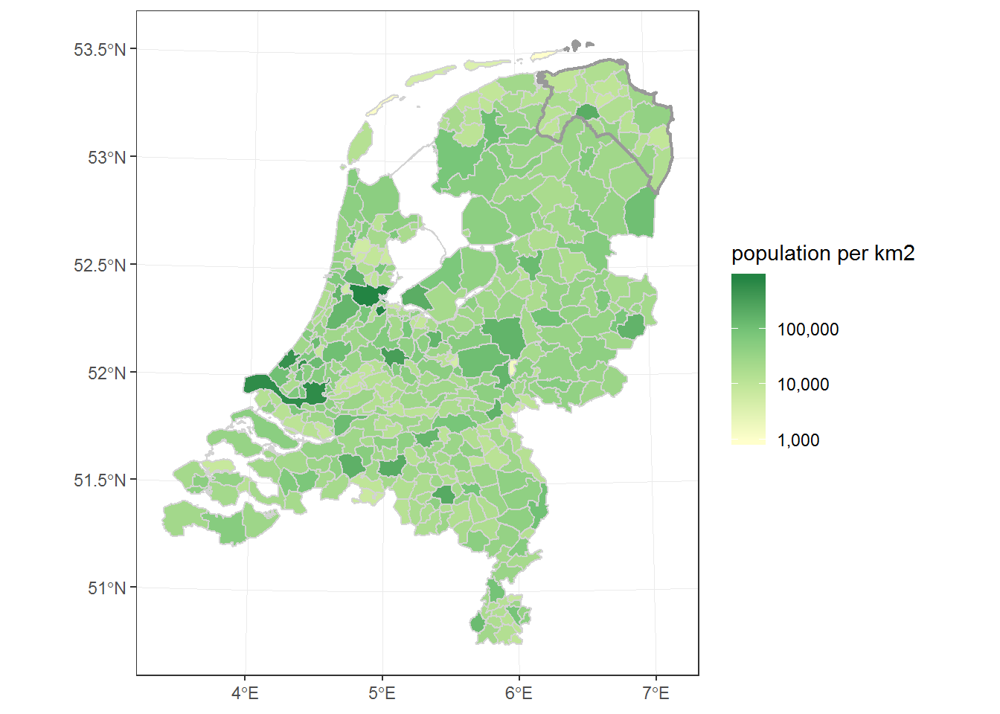

4. Spatial data¶
4.1. Giới thiệu¶
Spatial data là loại dữ liệu chứa các thông tin về “thuộc tính hình
học”(geometry), “hình dạng” (shape) hoặc “vị trí”(location) của một đối
tượng địa lý và thường kết hợp với các attributes chứa thông tin liên
quan khác. Định dạng dữ liệu spatial data cho phép chúng ta xây dựng
các biểu đồ với R hiệu quả.
Spatial Analytics có rất nhiều cách thức phát triển khác nhau. Tuy
nhiên, để thuận tiện và dễ dàng trong việc ứng dụng, ta tập trung vào 2
nhóm sau.
- Biểu đồ tĩnh (static map):
sf,tmap,ggplot2 - Biểu đồ động (interactive map):
leaflet
4.2. Cấu trúc dữ liệu spatial¶
Một loại định dạng dữ liệu được dùng phổ biến với spatial data là
vector data. Loại dữ liệu này thường được lưu dưới dạng shape
(.shp),để đọc định dạng này chúng ta sử dụng function read_sp
trong package sf
library(sf)
library(tidyverse)
lnd_sport <- sf::read_sf("data/spatial-data/london_sport.shp")
print(lnd_sport)
## Simple feature collection with 33 features and 4 fields
## geometry type: POLYGON
## dimension: XY
## bbox: xmin: 503571.2 ymin: 155850.8 xmax: 561941.1 ymax: 200932.5
## epsg (SRID): NA
## proj4string: +proj=tmerc +lat_0=49 +lon_0=-2 +k=0.9996012717 +x_0=400000 +y_0=-100000 +ellps=airy +units=m +no_defs
## # A tibble: 33 x 5
## ons_label name Partic_Per Pop_2001 geometry
## <chr> <chr> <dbl> <dbl> <POLYGON [m]>
## 1 00AF Bromley 21.7 295535 ((541177.7 173555.7, 541872.2 17~
## 2 00BD Richmon~ 26.6 172330 ((522957.6 178071.3, 523604.7 17~
## 3 00AS Hilling~ 21.5 243006 ((505114.9 184625.1, 505700.3 18~
## 4 00AR Havering 17.9 224262 ((552108.3 194151.8, 553221.9 19~
## 5 00AX Kingsto~ 24.4 147271 ((519370.8 163657.4, 518230.3 16~
## 6 00BF Sutton 19.3 179767 ((525554.3 166815.8, 526154.9 16~
## 7 00AT Hounslow 16.9 212352 ((513062.8 178187.2, 514592.3 17~
## 8 00BA Merton 20.7 187919 ((525102 166884.7, 524662.5 1669~
## 9 00BJ Wandswo~ 26 260379 ((529635.2 176671.9, 529517.9 17~
## 10 00AH Croydon 17.6 330584 ((531781.8 170986.4, 533693.2 17~
## # ... with 23 more rows
Định dạng dữ liệu này bao gồm hai cấu phần chính:
geometry: Là tật hợp các điểm kinh độ và vĩ độ xác định đường biên của một đối tượng trên hệ trục tọa độ.attribute: Các dữ liệu thông thường của đối tượng (quan sát) được chứa trongraster.
4.2.1. Geometry data¶
geom_type <- st_geometry(lnd_sport)
geom_type
## Geometry set for 33 features
## geometry type: POLYGON
## dimension: XY
## bbox: xmin: 503571.2 ymin: 155850.8 xmax: 561941.1 ymax: 200932.5
## epsg (SRID): NA
## proj4string: +proj=tmerc +lat_0=49 +lon_0=-2 +k=0.9996012717 +x_0=400000 +y_0=-100000 +ellps=airy +units=m +no_defs
## First 5 geometries:
Các thuộc tính hình học lưu trong geometry:
geometry type: thuộc tính hình họcdimension: Hệ trục XYbbox (Bounding box): các tọa độ lớn nhất, nhỏ nhất của objectsproj4string: thông tin hệ tọa độ địa lý
4.2.2. Attribute data¶
Phần dữ liệu này chúng ta có thể biến đổi và phân tích như dữ liệu bảng thông thường.
London_pop <- lnd_sport %>% select(name, Pop_2001)
London_pop %>% names
## [1] "name" "Pop_2001" "geometry"
Bromley <- London_pop %>% filter(name == "Bromley")
Bromley %>% head
## Simple feature collection with 1 feature and 2 fields
## geometry type: POLYGON
## dimension: XY
## bbox: xmin: 533569 ymin: 156480.8 xmax: 550541.2 ymax: 173555.7
## epsg (SRID): NA
## proj4string: +proj=tmerc +lat_0=49 +lon_0=-2 +k=0.9996012717 +x_0=400000 +y_0=-100000 +ellps=airy +units=m +no_defs
## # A tibble: 1 x 3
## name Pop_2001 geometry
## <chr> <dbl> <POLYGON [m]>
## 1 Bromley 295535 ((541177.7 173555.7, 541872.2 173305.8, 543441.5 171429~
4.3. Xây dựng biểu đồ tĩnh¶
4.3.1. Biểu đồ cơ bản¶
tmap là package phổ biến nhất để vẽ các biểu đồ tĩnh, tương tự như
ggplot2, package tmap cũng xây dựng theo hướng
layer approach. Với ggplot2 mới nhất, ta có thể dễ dàng xây dựng
bản đồ.
library("tmap")
data(NLD_muni,NLD_prov)
tm_shape(NLD_muni,projection="rd") +
#fill by population per km2
tm_fill("population",
convert2density=TRUE,
style="kmeans",
palette = "Greens",
title="Population per km2") +
tm_borders(alpha= .5) +
#combine with province data
tm_shape(NLD_prov) +
tm_borders(lwd=2, alpha = .5) +
tm_text("name",
size = .6,
alpha = 0.9,
shadow=TRUE,
bg.color="white",
bg.alpha=.25) +
tm_layout(asp = 0)

4.3.2. Facet theo Province¶
tm_shape(NLD_muni,projection="rd") +
#fill by population per km2
tm_fill("population",
convert2density=TRUE,
style="kmeans",
palette = "Greens",
title="Population per km2") +
tm_borders(alpha= .5) +
tm_facets(by="province",
free.coords=TRUE,
drop.shapes=TRUE)

4.3.3. Vẽ biểu đồ với ggplot2¶
Trước khi có package sf, khi cần vẽ map bằng ggplot2 ta cần
convert dữ liệu spatial về dạng data.frame, tuy nhiên version mới của
ggplot2 đã cập nhật thêm thuộc tính geom_sf - có thể vẽ trực
tiếp trên sf objects mà không cần convert về data.frame.
library(dplyr)
library(scales)
library(RColorBrewer)
pal <- brewer.pal(4, "YlGn")
NLD_muni_sub <- NLD_muni %>%
filter(province =="Groningen") %>%
group_by(province) %>%
summarise(population = sum(population), na.rm = T)
base_plot <- ggplot() +
geom_sf(data = NLD_muni, aes(fill = population),
color = "light grey") +
coord_sf(datum = NA) + # removes graticules +
scale_fill_gradientn(colors = pal, trans = "log10",
name ="population per km2", labels = comma)
base_plot +
geom_sf(data = NLD_muni_sub, aes(fill = NA ),
color = "grey60", alpha = 0,lwd = 0.8) +
theme_bw()
